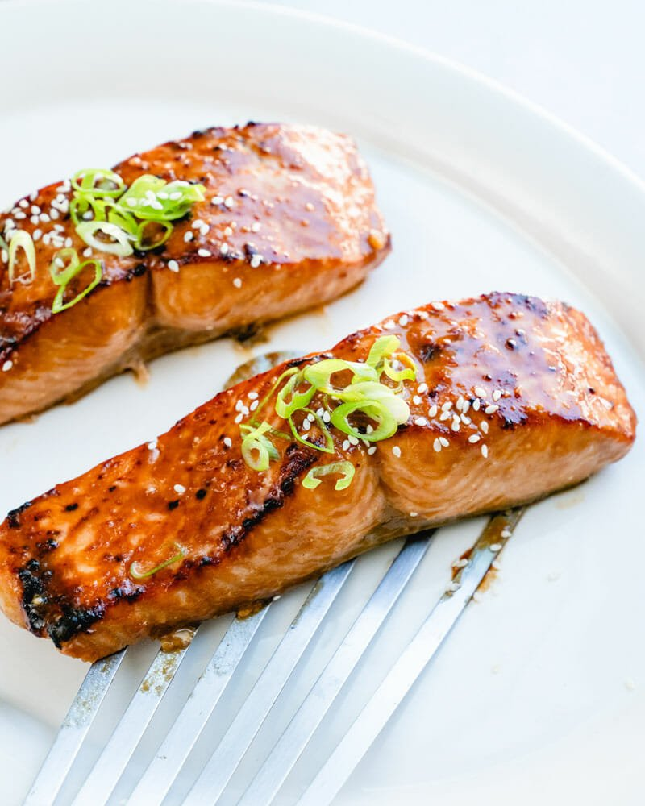

Miso Salmon 味噌サーモン

Description
Miso Salmon 味噌サーモン is a delicious dinnertime meal with a
perfect balance of flavors. The secret ingredient here is butter, which is
not a typical Japanese ingredient but works perfectly in this dish!
Broccoli is seared alongside the salmon and is adorned with a beautiful
miso butter sauce.
Ingredients
- 2 salmon fillets
- Sea salt
- Black pepper
- 1/2 Tbsp all-purpose flour
- 1 package frozen broccoli
- 1 Tbsp vegetable oil
- 1 Tbsp unsalted butter
- 1 Tbsp miso
- 1 Tbsp sugar
- 2 Tbsp sake
- 1 Tbsp mirin
- 1 1/2 Tbsp soy sauce
Steps
-
Combine the miso, sugar, sake, mirin, and soy sauce in a small bowl.
-
Steam the frozen broccoli in the microwave according to the package's
instructions.
- Sprinkle the flour on the salmon on all sides.
-
Heat the oil in a frying pan over medium heat, then add the salmon flesh
side down. Cook for 5 minutes.
-
Flip the salmon, and add the broccoli. Cook for another 5 minutes.
- Cook the sides of the salmon for 1 minute each.
- Add the butter and saute the broccoli in it.
-
Add the sauce made earlier, coat everything in it, plate up, and enjoy!